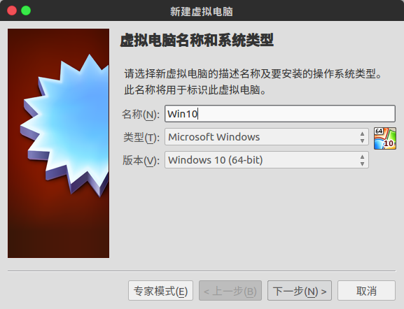
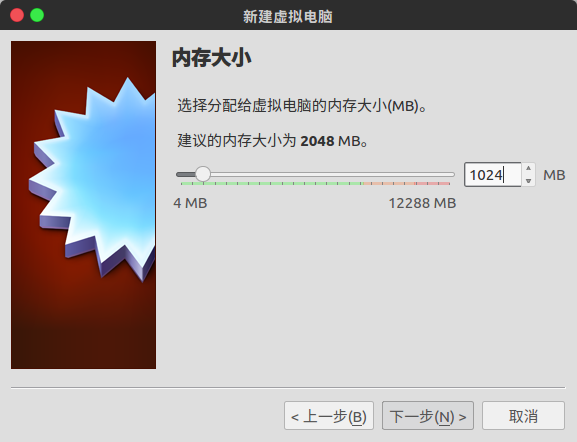
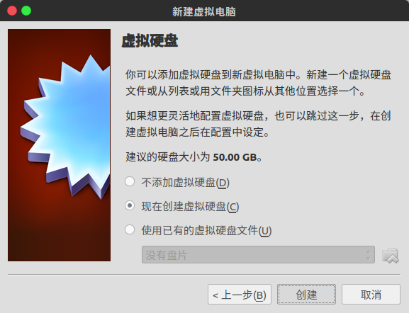
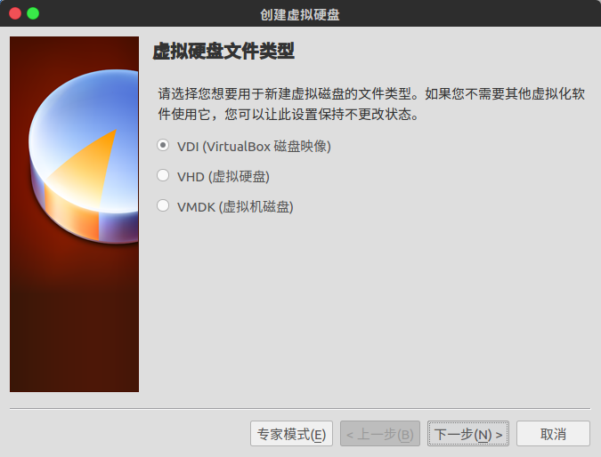
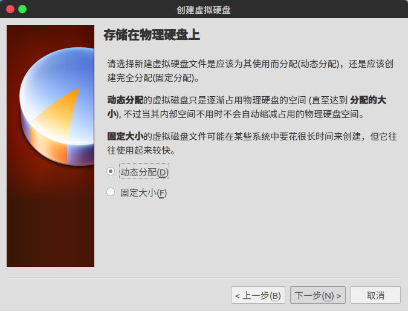
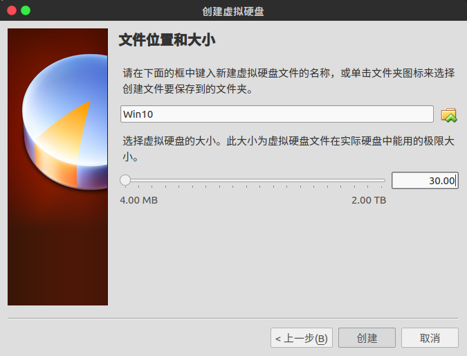
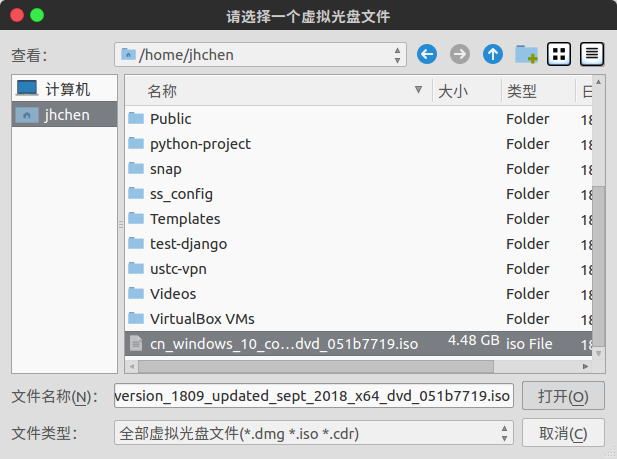
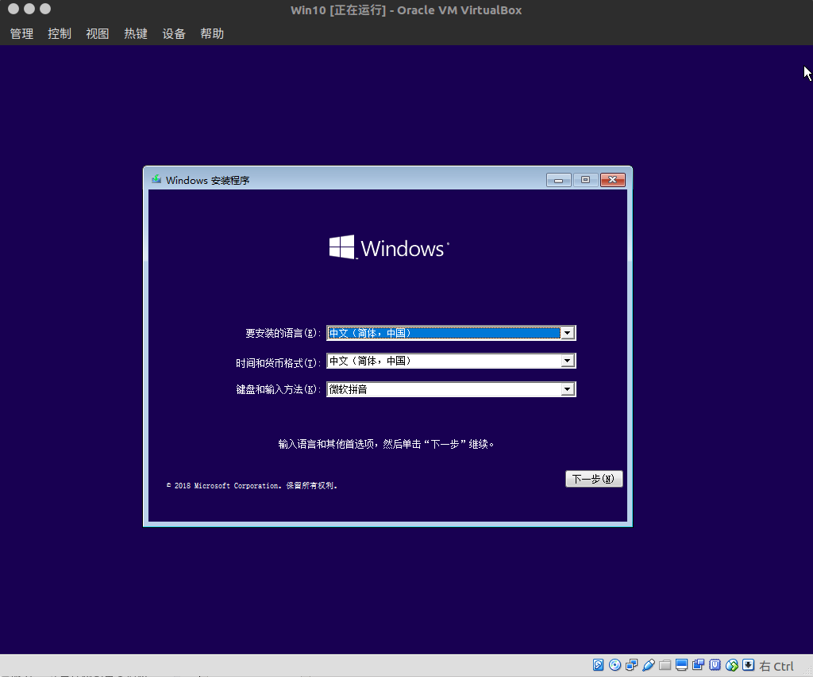
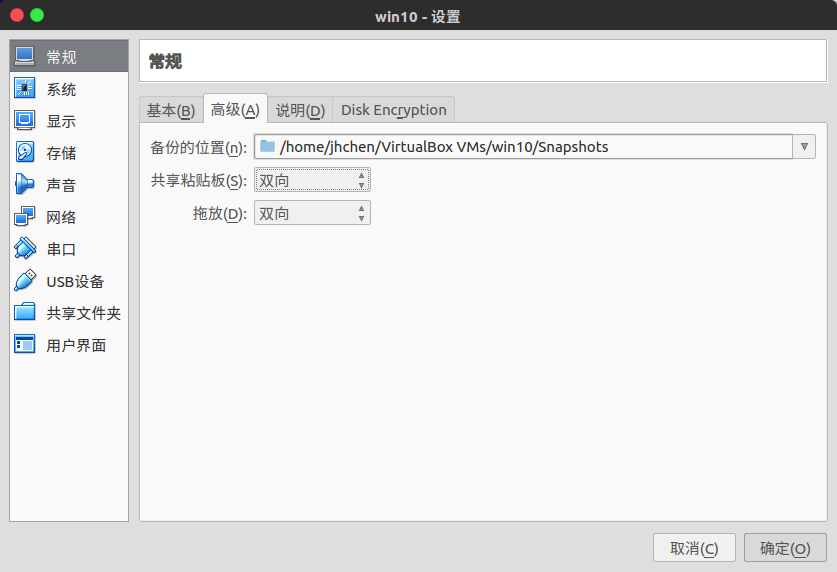

装好Ubuntu之后，大部分时间都是在使用Ubuntu了，但是无奈有些软件只能在Windows平台使用，来回切换双系统实在是麻烦，于是想着在Ubuntu上装个Windows的虚拟机，这里记录下安装过程，留给自己以后需要再安装时查看，也给大家参考～
安装virtualbox
1 | sudo apt-get install virtualbox |
安装好后在dash中搜索virtualbox，点击打开

创建一个虚拟机
点击新建，输入名称，选择你要安装的操作系统类型和版本，点击下一步

设置虚拟机的内存大小，我设置了2048M（2G）内存，这个后面可以更改，点击下一步

向导会提示你创建磁盘，如果之前没装过就选择现在创建虚拟磁盘，点击创建，一般都选这个啦，如果你之前装过就不会点进来看啦～

选择默认的VDI，点击下一步

选择动态分配，点击下一步

选择虚拟硬盘的保存位置和虚拟硬盘大小
这里的保存位置默认是：/home/username/VirtualBox VMs/
虚拟硬盘大小：其实可以设置大一点，因为上一步选择的是
动态分配，所以j假设即使你这里设置了30G，VirtualBox并不会立即从你的物理磁盘划出30G作为虚拟硬盘，而是你用一点它分配一点、用一点它分配一点，但是最大能分配的空间是30G

到此为止，一个虚拟机就创建完成了！
安装Window
加载ISO镜像
回到VirtualBox管理器主界面，点击
设置—>存储—>控制器:SATA—>第二个选项没有盘片在右边的
属性栏的右边有个小光盘图标，点击它，选择选择一个虚拟光盘文件，在弹出的框框里选择你的ISO镜像文件，没有的话可以点击这里去MSDN，I Tell You下载
点击
确定安装Win10
回到VirtualBox管理器主界面，选择刚才创建的虚拟机，点击
启动然后一步步傻瓜式的安装就行啦

常用设置
设置双向共享粘贴板和双向拖放
